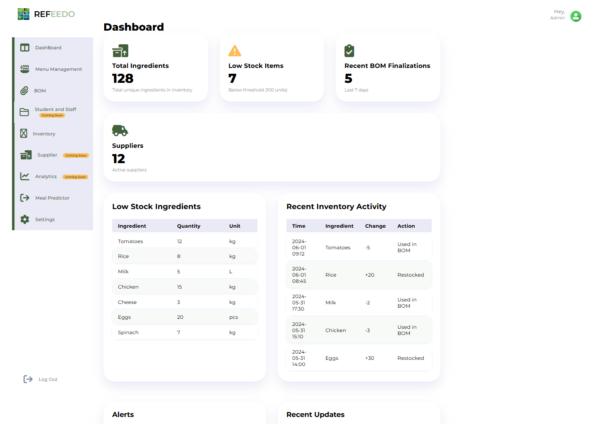
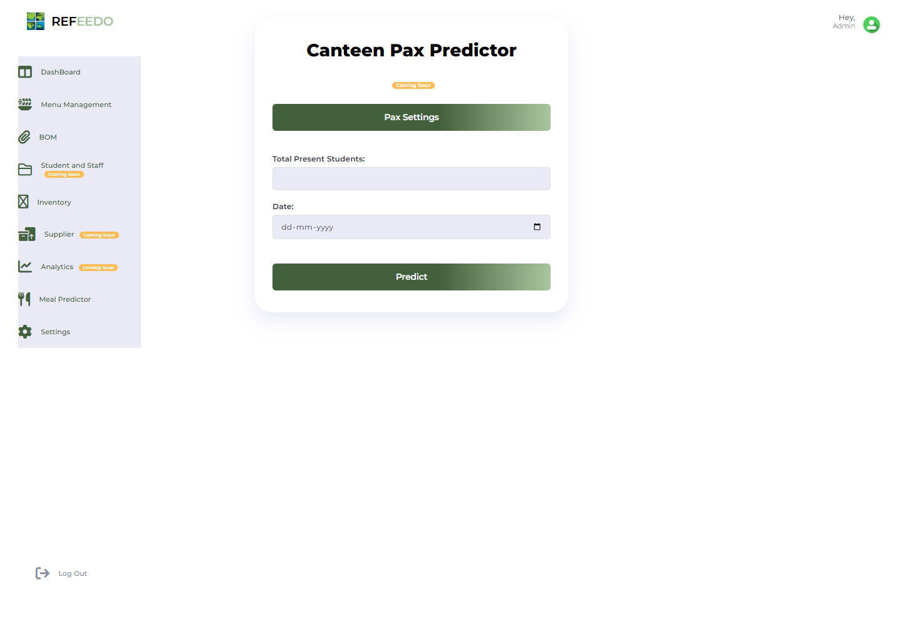

Large-scale food service operations face a major challenge: demand uncertainty. Overproduction, poor inventory visibility, and a lack of data-driven decision-making lead to significant daily food wastage and increased operational costs.
Developed as an internship project for a Sodexo-oriented food-service workflow, the system replaces disconnected spreadsheets with a common operational path. It combines weekly menus, dish-to-ingredient mappings, inventory, BOM calculations, and a meal-attendance predictor.
My contribution: Solo internship project — I designed the data model, built the FastAPI service layer, implemented the Random Forest pax predictor, and delivered the manager-facing dashboard UI.
Tech Stack
One interface for inventory state and meal planning


Data-to-Decision Pipeline
The system calculates Waste Ratios (prepared - consumed / prepared) and correlates them with meal types, days, and ingredient patterns to find recurring inefficiencies.
Features: day of week, meal type, historical attendance count, seasonal index. Output: predicted meal count used for portion planning and ingredient procurement. Prototype — trained on internship-period data; accuracy improves with longer history.
The source is organized around operator workflows
| Subsystem | Runtime | Responsibility | State contract |
|---|---|---|---|
| Menu management | FastAPI routes + SQL | Weekly menu composition and dish selection | Menu dates, meal slots, dish identifiers |
| BOM finalization | Python + pandas | Resolve selected dishes into ingredient demand | Required quantity, unit, available stock, deficit |
| Inventory ledger | MySQL | Track stock levels, restocks, and BOM consumption | Ingredient, quantity delta, action, timestamp |
| Pax prediction | scikit-learn | Estimate meal attendance from planning inputs | Service date, present population, predicted pax |
| Manager interface | HTML + CSS + JavaScript | Expose shortages and recent operational activity | Summary counters, exception lists, route actions |
The Optimization Lifecycle
Input Data Ingestion
Kitchen logs (manual or semi-automated) capture ingredient usage per dish and daily consumption metrics across different meal types.
Normalization & Aggregation
Raw data is cleaned and aggregated by meal type, day, and ingredient to provide a consistent baseline for analysis.
Pattern Analysis
The engine identifies high-waste items, demand fluctuations, and peak vs. low consumption periods using statistical heuristics.
Recommendation Engine
The system generates actionable recommendations: portion adjustments, inventory corrections, and menu-level optimizations for kitchen managers.
Solving Real-World Messiness
Inaccurate Manual Data Entry
Human error in logging quantities can lead to incorrect optimization recommendations and skewed waste ratios.
Validation & Historical Benchmarking
Implemented validation checks and historical trend analysis to flag anomalies in data entry before they affect the optimization logic.
Unpredictable Demand Spikes
Sudden events or holidays cause spikes that standard patterns can't predict, leading to potential stockouts or waste.
Recommendation Thresholds
Instead of hard rules, the system uses recommendation thresholds that allow managers to override logic based on external context.
System Scalability
Handling large-scale kitchen data across multiple locations requires efficient processing to maintain real-time updates.
Modular Backend & Caching
Designed a modular backend architecture with efficient aggregation queries and caching for repeated analytical lookups.
What the implementation makes measurable
This project demonstrated how a shared operational data model can make kitchen decisions measurable and reviewable. The system is designed to support:
- Sustainability: Compare planned, prepared, and consumed quantities before claiming waste reduction.
- Cost Efficiency: Connect ingredient requirements to inventory and procurement context.
- Operational Efficiency: Replace repeated manual calculations with auditable BOM and menu workflows.